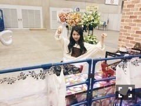
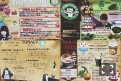
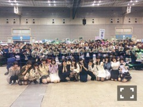
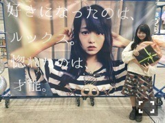
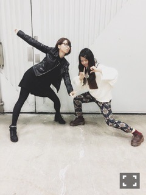

| 2015/02 09 Mon | 魚と夜と音。626回目 |

2日間連続で個別握手会でした。
来てくださったみなさん
ありがとうございました！
東京ビックサイトでの
アルバムスペシャル個握は
私服ではなく歌唱衣装だったよ〜
1部 ぐるぐるカーテン
2部 13日の金曜日
3部 走れ！Bicycle
4部 春のメロディー
5部 ガールズルール
普段は間近で見る機会はないと思うし
衣装で握手会っていうのも新鮮でした。
13金人気だね！びっくり
私はこの中だったらBicycleが好き。
初選抜で思い入れのある衣装。
次はなに着ようかな〜
続いてパシフィコ横浜個握。
2部終わりに
生誕祭があるということで

カフェ風にレーンが装飾されてた。

絵が小さいサイズになってる！
反対側にはレコードが
飾ってありました。

ラテアート風のイラストすごい。
紀の善のあんみつがある！

メニューもありました。
苔のメニューってなんぞ笑
どれ頼みたいですか？
落ち着きがあって、
私の好きな雰囲気を
分かってるんだな〜と思いました。
どれも愛に溢れていて嬉しかったです。
さゆからお手紙もらいました！
さゆの生誕祭では私が読んだんだ。
ふざけ合うことがほとんどだけど
乃木を語ると止まらないの。
さゆが言ってくれたひと言は
私が今年どう動くかで
変わるんだろうなって思いました。

封筒が渋い。斬新
そういえばクリスマスにもらった
入浴剤も渋かった...さすが
温泉行くぞー！

生誕祭委員会の皆さん
お祝いしてくださった皆さん
ありがとうございました。
そしてわざわざ来てくれた
メンバーほんとにありがとう！
こんなに来てもらえて嬉しい。

以前の握手会から飾ってある
とても素敵な垂れ幕。
ことばも嬉しいし、おしゃれだ〜
メッセージもお花もプレゼントも
ありがとうございました。
残りの18歳を噛み締めながら
仕事とリハ頑張ります！
乃木坂46SHOW!
で再びコントに出演。
今回のツンデレメイドは
前回よりかなりパンチがきいてた。
発売中のTopYellに出てます。
アンダーライブファイナルと
クリスマスライブのレポと、
今後のことや目標など語る。
選抜発表後のブログの詳細かな。
あと、私のこだわりという連載で
なかなかマニアックな話をしてる。
読んでほしいです！
そして12日発売のCUTiEに
飛鳥と一緒に載ります。
しっかり載るのはリニューアル前に
寧々と載った以来かな？
とても可愛い気持ちになれたよ〜
ラブリーウイルス！
体調に気をつけて
今週も元気に頑張るぞー

2月20日組
せいたんが
3周年ライブを最後に卒業します。
同い年で3年間一緒に
過ごしてきた大切なメンバー。
95年組が卒業していくのは
寂しいです。
悔いのないよう活動してほしい。
笑顔で送り出したいと思います。
まりか
コメント(826)
2015/02/09 20:36